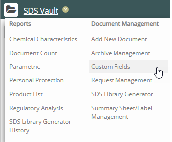
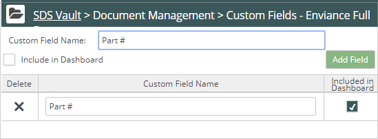

In Vault, you can create custom fields and associate them with your products. You provide names for the fields and optionally, you can configure the fields to display in the Search page and Advanced Search page. Users can enter values in them and search for products associated with the fields.
To add a custom field:
Click Vault Main Menu (). The Vault navigation pane displays. Select Custom Field from the Document Management list.

The Custom Fields page displays.
Click Add a New Custom Field. The Add a Custom Field window displays.

Specify the name of the custom field.
(Optional) Check Include in Dashboard to make this field display in the Search form.
Click Add Field. Vault adds the field.
In the following example, we created the custom field named Part # and the field displays on the Search page:
 ). The Vault navigation pane displays. Select Custom Field from the Document Management list.
). The Vault navigation pane displays. Select Custom Field from the Document Management list.